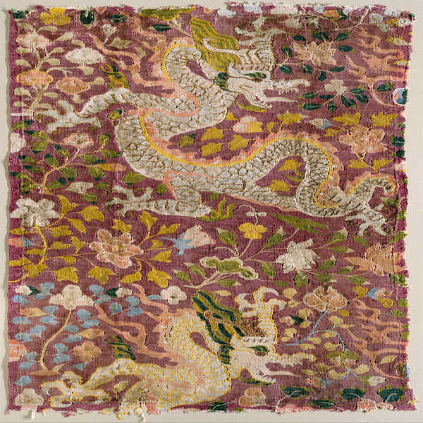
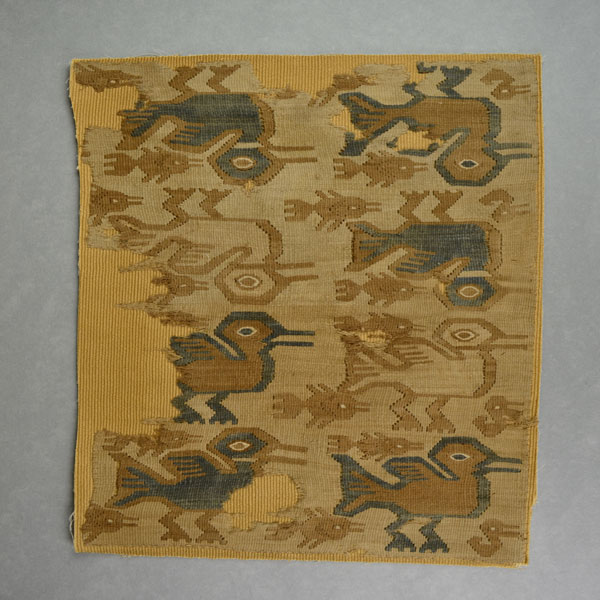
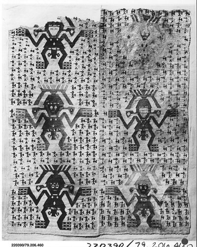
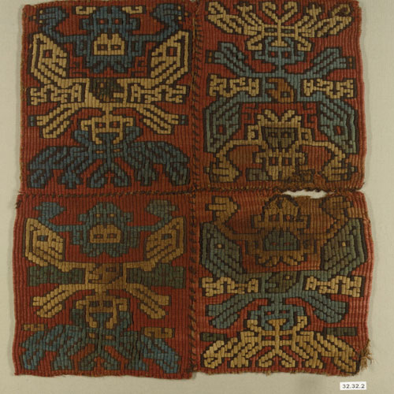

CSS BOX MODEL EXERCISE
7th-15th Century Art Tapestry:

- 11th-12th Century Tapestry : Tapestry with Dragons & Flowers from Eastern Central Asia

- 10th-15th Century Tapestry: Tapestry Fragment from Peru

- 12th-15th Century Tapestry: Another Tapestry Fragment from Peru

- 7th Century Tapestry: Tapestry Panel from Peru, Rio Grande De Nasca

- 11th-12th Century Tapestry : Tapestry with Dragons & Flowers from Eastern Central Asia

- 10th-15th Century Tapestry: Tapestry Fragment from Peru

- 12th-15th Century Tapestry: Another Tapestry Fragment from Peru
